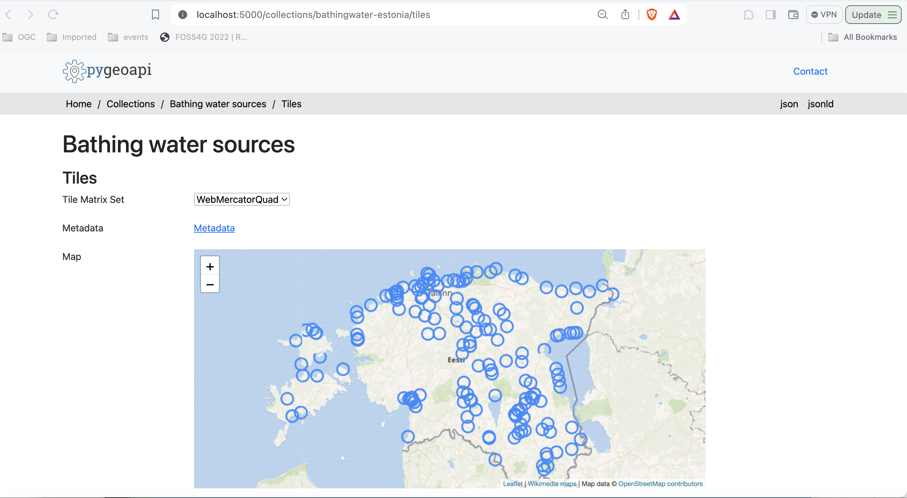
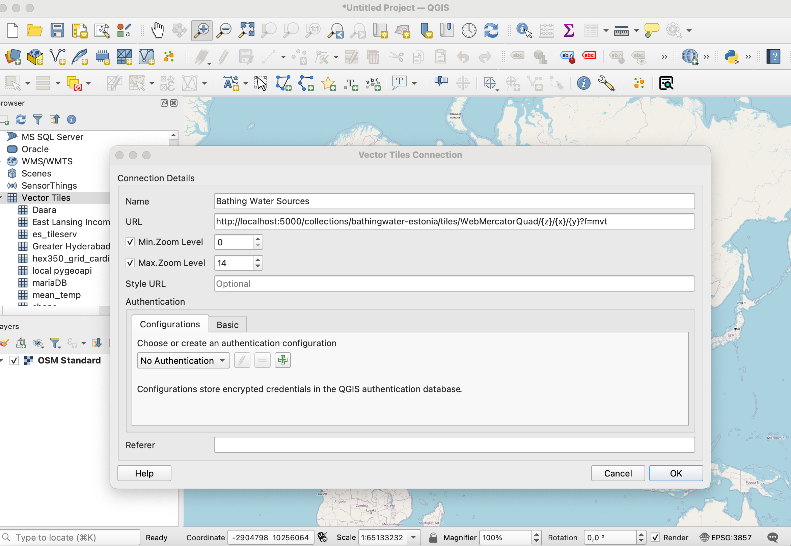
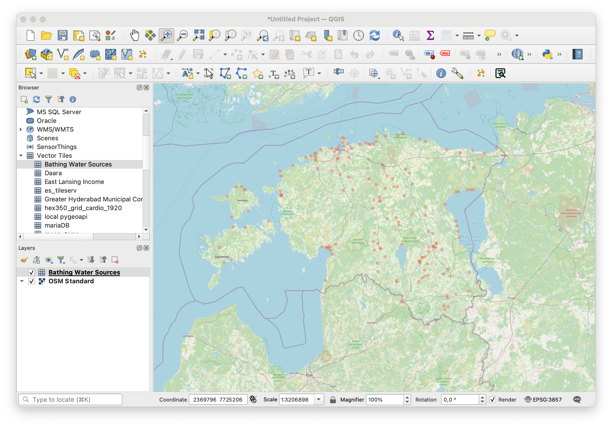
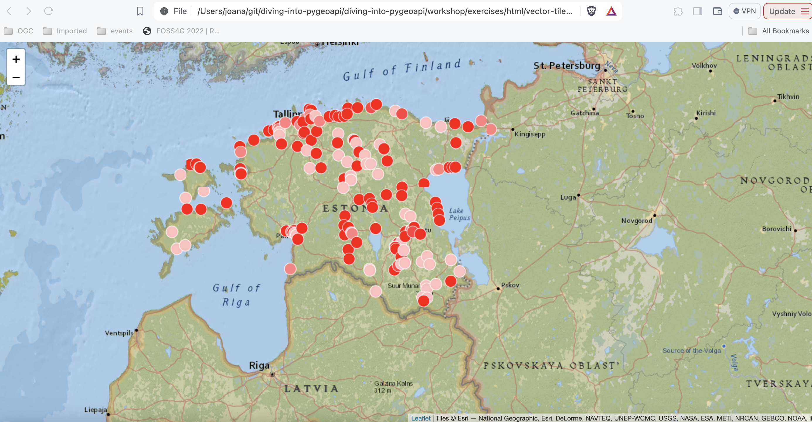
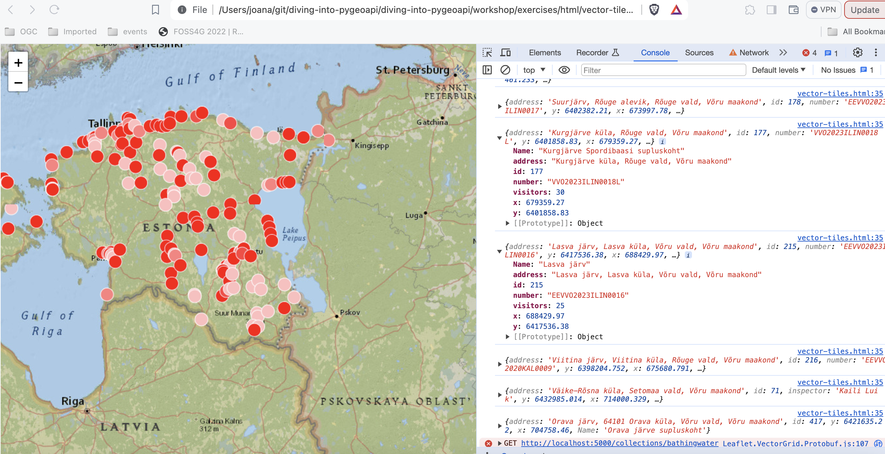
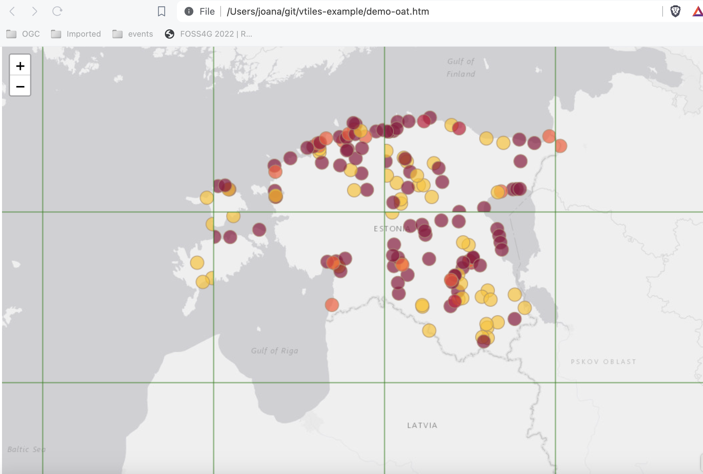

Exercise 4 - Tiles of geospatial data via OGC API - Tiles
OGC API - Tiles provides a Web API to deliver tiles of geospatial information. Different forms of geospatial information are supported, such as tiles of vector features ("vector tiles"), coverages, maps (or imagery) and potentially eventually additional types of tiles of geospatial information. The standard is available on this document:
Note
OGC API - Tiles extends the collections/* URL structure (tilesets are listed under /collections/example/tiles:
https://demo.pygeoapi.io/collections/lakes/tiles/WorldCRS84Quad/{tileMatrix}/{tileRow}/{tileCol}?f=mvt
pygeoapi support
pygeoapi supports the core OGC API - Tiles specification, and is able to advertise an existing tileset. Note that pygeoapi
itself does not render tiles from source data. It supports publishing pre-rendered tiles from a static url or from a tile server with a xyz url template.
Note
The OGC API - Tiles URL structure is compatible with XYZ layers in common libraries such as OpenLayers, Leaflet and MapML
Note
See the official documentation for more information on supported tile backends
Note
pygeoapi currently supports two well known Tile Matrix Sets: WorldCRS84Quad and WebMercatorQuad. Their definition is published on the /TileMatrixSets end point.
Publish pre-rendered vector tiles
In this scenario, tiles must be pre-rendered before serving. Existing tools to create tiles include, but are not limited to:
For this exercise, you will publish a vector dataset of the bathing water sources in Estonia, from the location below:
- data:
workshop/exercises/data/tartu/bathingwater-estonia.geojson
Let's generate the tiles as the first step using tippecanoe:
Using tippecanoe to generate vector tiles
cd workshop/exercises
docker run -it --rm -v $(pwd)/data:/data emotionalcities/tippecanoe \
tippecanoe -r1 -pk -pf --output-to-directory=/data/tiles/ --force --maximum-zoom=20 \
--extend-zooms-if-still-dropping --no-tile-compression /data/tartu/bathingwater-estonia.geojson
cd workshop/exercises
docker run -it --rm -v ${pwd}/data:/data emotionalcities/tippecanoe \
tippecanoe -r1 -pk -pf --output-to-directory=/data/tiles/ --force --maximum-zoom=20 \
--extend-zooms-if-still-dropping --no-tile-compression /data/tartu/bathingwater-estonia.geojson
Update the pygeoapi configuration
Open the pygeoapi configuration in a text editor. Add a new dataset section as follows:
1 2 3 4 5 6 7 8 9 10 11 12 13 14 15 16 17 18 19 20 21 22 23 24 25 26 27 28 29 30 31 32 33 34 35 36 37 38 39 40 41 | |
Save the file and restart Docker Compose. Navigate to http://localhost:5000/collections to evaluate whether the new dataset has been published.
Additional check for the following tile specific endpoints in the bathingwater-estonia collection:
- tile links in http://localhost:5000/collections/bathingwater-estonia/tiles
- tile metadata in http://localhost:5000/collections/bathingwater-estonia/tiles/WebMercatorQuad/metadata

Publish vector tiles from Elasticsearch
Elasticsearch provides a middleware that renders an index on the fly, as vector tiles. This middleware is also supported by the pygeoapi mvt backend.
If you want to explore publishing vector tiles using Elasticsearch clone pygeoapi-examples repository:
git checkout https://github.com/geopython/pygeoapi-examples.git
Then change into the docker/mvt-elastic folder:
cd docker/mvt-elastic
Edit the add-data.sh script on the ES folder, adding these two lines before the end:
1 2 | |
Above we are downloading the bathingwater-estonia.geojson inside the container, and ingesting it into an Elasticsearch index. After this we need to build the docker image:
docker compose build
Edit the docker.config.yml configuration on the pygeoapi folder, adding this code block before the end:
1 2 3 4 5 6 7 8 9 10 11 12 13 14 15 16 17 18 19 20 21 22 23 24 25 26 27 28 29 30 31 32 33 34 35 36 37 38 39 40 41 42 43 | |
This configuration enables publishing bathingwater-estonia.geojson as both, OGC API - Features and OGC API - Tiles.
Finally start the docker composition, which will download and ingest the dataset and publish it in pygeoapi:
docker compose up
Note
You can check your elastic index at: http://localhost:9200/_cat/indices
If you are in production, you may want to close the elastic ports on docker-compose.
Client access
QGIS
QGIS supports OGC API Vector Tiles via the Vector Tiles Layer. Although OGC API - Tiles are not natively supported, you can customize the generic connection in order to access them in QGIS.
Access OGC API Vector Tiles from QGIS
Before entering QGIS, access your pygeoapi installation page on the browser and follow these steps.
- access the collection page of the tiles dataset: http://localhost:5000/collections/bathingwater-estonia
- navigate to the tiles page by clicking on
tiles: http://localhost:5000/collections/bathingwater-estonia/tiles - click in
Tiles metadata: http://localhost:5000/collections/bathingwater-estonia/tiles/WebMercatorQuad/metadata - note the URL template:
http://localhost:5000/collections/bathingwater-estonia/tiles/WebMercatorQuad/{tileMatrix}/{tileRow}/{tileCol}?f=mvtand of the values of minZoom and maxZoom
Follow these steps to connect to a service and access vector tiles:
- locate the vector tiles service on the left hand side browser panel. Note that you can also use the top menu and navigate to
Layer > Add Layer > Vector Tile Layer

- right-click to bring up the context menu and choose
New Generic connection - fill the required values. For URL, use the URL you noted from the previous step, replacing
{tileMatrix}/{tileRow}/{tileCol}with{z}/{x}/{y}. - press
OKto add the service. At this point, if you are using the browser you should see the collection appearing in the menu, below "Vector Tiles" - double-click in the collection to add it to the map
- zoom in to Estonia to visualize your dataset

LeafletJS
LeafletJS is a popular JavaScript library to add interactive maps to websites. LeafletJS does not support OGC API's explicitely, however can interact with OGC API by using the results of the API directly.
Add OGC API - Tiles to a website with LeafletJS
- copy the HTML below to a file called
vector-tiles.html, or locate this file inworkshop/exercises/html - open the file in a web browser
The code uses the LeafletJS library with the leaflet.vectorgrid plugin to display the lakes OGC API - Tiles service on top of a base layer.
1 2 3 4 5 6 7 8 9 10 11 12 13 14 15 16 17 18 19 20 21 22 23 24 25 26 27 28 29 30 31 32 33 34 35 36 37 38 39 40 41 42 43 44 45 46 47 48 49 50 51 52 53 54 55 | |
In this example, the colors of the symbols reflect the value of the visitors attribute.

Note
You can check the layer attributes, by opening the console in the developer tools. 
Tip
Try adding a different pygeoapi vector tiles layer by updating the code in workshop/exercises/html/vector-tiles.html.
If you want to render the tiles from the Elasticsearch example, you can check out the code from this repository:
git clone -b ogcapi-ws https://github.com/emotional-cities/vtiles-example.git

Tip
See the official LeafletJS documentation
OpenLayers
OpenLayers is a popular JavaScript library to add interactive maps to websites. OpenLayers natively supports OGC API - Tiles.
Tip
Summary
Congratulations! You are now able to publish tiles to pygeoapi. You can learn more about this standard on: https://tiles.developer.ogc.org/